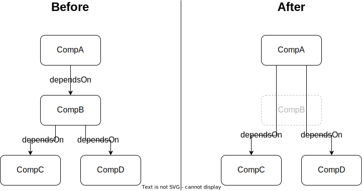

Available commands
This section only covers the commands where further information is required. For all commands use
cdx-ev --help # Lists commands and options
Before use, please consider the known limitations of the tool.
amend
This command accepts a single input file and will add any missing fields to it which can be automatically inferred.
Currently, the command adds or modifies the following pieces of information:
- If the SBOM metadata doesn't specify an author from the SBOM, it will be set to
{"name": "automated"}. - The compositions array will be overwritten with a new one which specifies a single incomplete aggregate. This aggregate contains all components, including the metadata component.
- If a component does not have an author, publisher or supplier, the tool will try to infer the supplier from (in order of precedence):
- externalReferences of type website
- externalReferences of type issue-tracker
- externalReferences of type vcs
- Generates a bom-ref for components which don't have one, yet. The bom-ref will be a GUID.
merge
This command requires at least two input files, but can accept an arbitrary number.
Alternatively only one file can be submitted and the command --from-folder must be used to provide the path to a folder.
This command reads the contents of the provided folder and loads all files with "*.cdx.json" or the name "bom.json", according to the naming convention described in the CycloneDX Specification.
If a file in the folder has the same name as the provided sbom to be merged in, it will be skipped.
The files are then merged in alphabetical order into the regularly provided sbom in this order.
The process runs iterative, merging two SBOMs in each step. In the first step, the second submitted SBOM is merged into the first. In the second step the third would be merged into the resulting SBOM from step one etc.
The Resulting SBOM will contain the Metadata from the first SBOM submitted, with only the timestamp being updated.
The components from the first SBOM submitted will be kept unchanged, if the SBOMs that are merged contain new components, those will be added to the list of components. Should a component be contained in several SBOMs, the one from the SBOM that was merged earlier will be taken without any consideration. If this happens and a component ist dropped during the merge, a warning will be shown. Uniqueness of the bom-refs will be ensured.
The dependencies for new components are taken over. If components are contained in both SBOMs, then the dependsON lists for them will be merged so that no information will be lost.
If a VEX section is contained, it will be merged as well, for details see merge-vex section
merge-vex
This command requires two input files, a SBOM and a VEX file that shell be merged. The VEX file needs to be compatible with the SBOM.
If the SBOM does not contain a VEX file, the VEX file simply be added to the SBOM.
If the SBOM already contains a VEX section, the two VEX files are merged uniquely. In the case of duplicate entries, the ratings will be merged. Should two ratings of the same method contain a different rating, the newer one will be kept.
set
This command sets properties on specified components to specified values. If a component in an SBOM is missing a particular property or the property is present but has a wrong value, this command can be used to modify just the affected properties without changing the rest of the SBOM.
For this command to work, three bits of information must be provided by the user: The target component(s) to modify as well as the name and new value of each property to set on the target component.
This data can either be passed directly on the command-line — in this case only a single update can be performed per invocation — or in a JSON file — this allows performing an unlimited number of updates in a single invocation.
Target components
The target component can be identified through any of the identifiable properties defined by CycloneDX, specifically: cpe, purl, swid or the combination of name, group and/or version (collectively called coordinates).
If coordinates are used to identify the target, they must match the component fully. In other words, if only name is given, it will only match components with that name which do not contain version or group fields.
Protected fields
Some fields are protected and cannot be set by default. The full list of protected properties is:
- cpe
- purl
- swid
- name
- group
- version
- components
To set any of these fields, use the --allow-protected command-line switch.
Values
The value must be given as a valid JSON value. That means command-line usage can be a little strange, when setting a simple string value. To be valid JSON, the string must be surrounded by double quotes. Since double quotes hold a special meaning in most shells, they will likely have to be escaped. An example for bash follows.
# Set a simple string property, such as copyright in bash
cdx-ev set --cpe <target-cpe> --key copyright --value '"2022 Acme Inc"'
Conflicts
Conflicts arise when a target component already has a value for the specified property. When this happens, the command follows the following rules to determine how to proceed:
- If the new value is
null, delete the existing property. The tool assumes that a user who setsnullis aware that the property exists and wants to delete it. - If the property is an array, the new value is appended to the old value.
- If the
--forcecommand-line option is set, the old value is overwritten with the new. - If the tool is running in an interactive terminal, the user is prompted to decide whether to overwrite the old value.
- If none of the above applies, an error is thrown.
Hawk-eyed readers will have spotted a little stumbling block in these rules. What if an array should be overwritten? A little trickery is needed here. The property must first be explicitly deleted by setting it to null, then re-added with the new value.
On the command-line this can be done in two subsequent invocations:
# Overwrite an array-valued property
cdx-ev set --cpe <target_cpe> --key licenses --value null
cdx-ev set --cpe <target_cpe> --key licenses --value '[{"license": {"id": "MIT"}}]'
When passing the set list in a file, two separate updates must be specified for the same target component.
Set list file format
When passing the targets, names and values in a file, the file must conform to this format:
[
{
"id": {
# Could be any one of the identifying properties in CycloneDX.
# Multiple identifiers are not allowed (with the special exception of name,
# group and version which are only valid together)
"cpe": "CPE of target component goes here"
},
"set": {
# Sets a simple property
"copyright": "2022 Acme Inc",
# Deletes a property
"author": null,
# Sets an array array-valued property. If the property already exists on the target,
# the new value will be appended to the existing one.
"licenses": [
{
"license": {
"id": "MIT"
}
}
]
}
},
...
]
validate
This command is used to validate the SBOM according to a specification.
Use of different schemas
The package is currently delivered with the specification for CycloneDX 1.3 and 1.4. Further, it is provided with a custom schema, which not only requires the minimum elements as defined by the NTIA but also some further recommended fields, e.g. licenses and stating the known unknowns (through the compositions-field).
You can control the usage of the specification with the flag --schema-type:
cdx-ev validate bom.json --schema-type=custom # use provided custom schema in package
cdx-ev validate bom.json # default CycloneDX specification will be used
Validation of file name
According to the CycloneDX specification there are commonly recognized file name patterns: bom.json and *.cdx.json.
For unification this tool also validates the file name. Per default the following "regex" is validated:
^name_version_(hash|timestamp|hash_timestamp).cdx.json$ | ^bom.json$
Where name, version, hash and timestamp are information of the metadata from a SBOM.
If it is desired to have a different Regex, this can be done via the flag --filename-pattern, i.e.:
cdx-ev validate mybom.json --filename-pattern=".*" # every character allowed
cdx-ev validate mybom.json --filename-pattern="(^bom\.json$)" # only bom.json allowed
Please note the usage uf quotation marks in the --filename-pattern. This is required for the escaping of special characters.
Otherwise, this may lead to undesired results as your input is not sanitized.
Logging
Per default the command only writes to stdout. However, for supporting integration into CI/CD, other formats shall be supported, too. This can be controlled via the flag --report-format.
Currently, only another format is supported: The warnings-ng-plugin. It can be used as followed:
cdx-ev validate bom.json --report-format=warnings-ng" # writes issues to a file "issues.json" and stdout
cdx-ev validate bom.json --report-format=warnings-ng --output=myfile.json" # write issues to a file "myfile.json" and stdout
build-public
This command creates a reduced version of an SBOM fit for publication. It:
- deletes components matching a JSON schema provided by the user, and
- removes any property (i.e., item in the
propertiesarray of a component) whose name starts withinternal:from all components.
The actions are performed in this order, meaning that internal properties will be taken into account when matching the JSON schema.
The JSON schema must be formulated according to the Draft 7 specification.
Dependency-resolution
Any components deleted by this command are equally removed from the dependency graph. Their dependencies are assigned as new dependencies to their dependents.

Examples
Here are some JSON schemata for common scenarios to get you started.
When passed to the command, this schema will remove any component whose group is com.acme.internal.
{
"properties": {
"group": {
"const": "com.acme.internal"
}
},
"required": ["group"]
}
An extension of the above, the next schema will delete any component with that group, unless it contains a property with the name internal:public and the value true.
Note that the property itself will still be removed from the component, because its name starts with internal:.
{
"properties": {
"group": {
"const": "com.acme.internal"
}
},
"required": ["group"],
"not": {
"properties": {
"properties": {
"contains": {
"properties": {
"name": {
"const": "internal:public"
},
"value": {
"const": "true"
}
},
"required": ["name", "value"]
}
}
},
"required": ["properties"]
}
}
This schema will delete the three components with the names AcmeSecret, AcmeNotPublic and AcmeSensitive:
{
"properties": {
"name": {
"enum": ["AcmeSecret", "AcmeNotPublic", "AcmeSensitive"]
}
},
"required": ["name"]
}
The following schema is a little more involved. It will delete any component whose license text contains the string This must not be made public.
{
"properties": {
"licenses": {
"contains": {
"properties": {
"license": {
"properties": {
"text": {
"properties": {
"content": {
"pattern": "This must not be made public"
}
}
}
},
"required": ["text"]
}
},
"required": ["license"]
}
}
},
"required": ["licenses"]
}